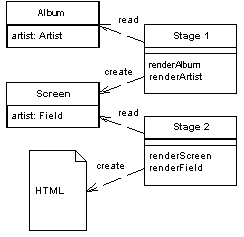

Two Step View (Двухшаговая шаблонизация)

Паттерн проектирования Two Step View
Описание Two Step View
Преобразует данные в HTML в два шага: сначала формирует логическую структуру, а позже - заполняет её отформатированными данными
Если web-приложение состоит из множества страниц, необходим единый вид и единая структура сайта. Если каждая страница выглядит по своему, получится сайт, который будет непонятным для пользователя. Также возможна ситуация, когда нужно сделать глобальные изменения на всём сайте (например поменять заголовок), но при использовании Template View или Transform View возникают трудности, потому что код представления дублируется от страницы к странице и надо исправлять его во всех файлах.
Шаблон Two Step View решает эту проблему разбиением шаблонизации на две части. В первой, данные из модели преобразуются в логическое представление без какого-либо другого, специфического форматирования. Второй шаг преобразует это логическое представление с использование необходимого конкретного форматирования. Таким образом, можно делать глобальные изменения, изменяя только второй шаг. Также можно сделать несколько представлений для одной и той же информации, выбирая на лету форматирование для второго шага.
Пример: хорошая реализация двухшаговой шаблонизации есть в фреймфорке Zend Framework в классе Zend_Layout. Общая оплётка отделяется от конкретного вида посредством layout'а.
Использована иллюстрация с сайта Мартина Фаулера.